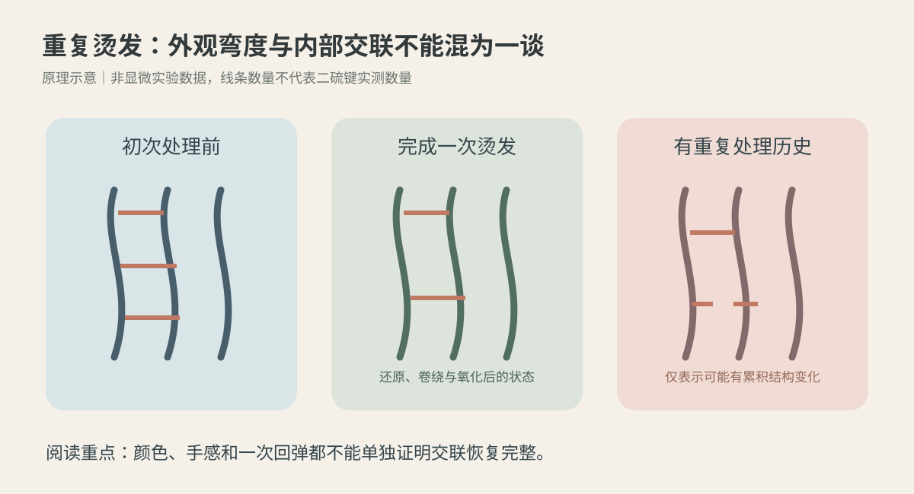
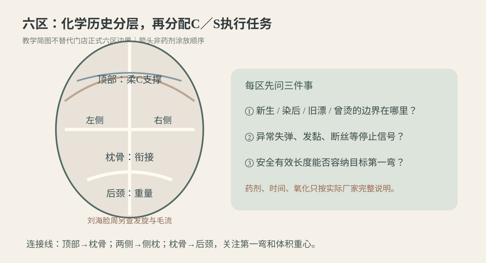
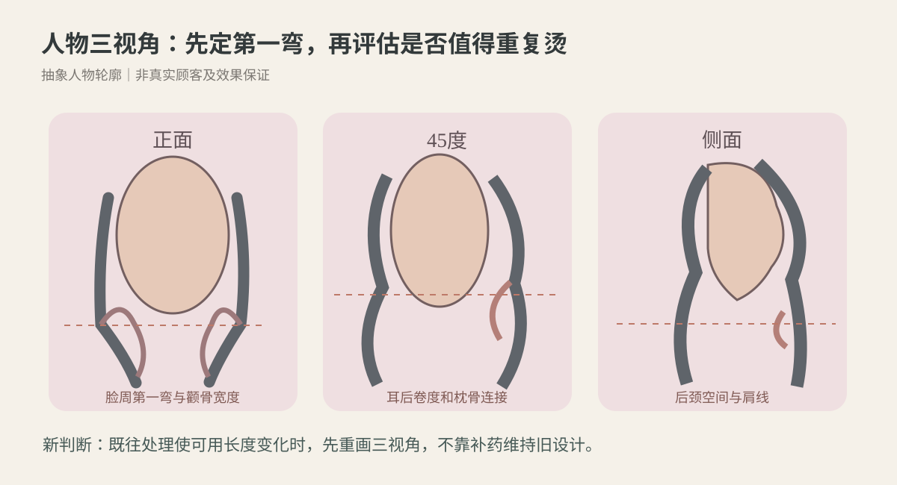

2026-11-12
【今日核心问题】同一头发已经烫过一次，过一段时间再烫，为什么不能直接沿用第一次的药剂、时间与卷绕目标？
【一、把外观与结构分开】一根毛干主要由外层毛鳞片、主体皮质层以及部分毛发中的髓质构成。毛鳞片参与表面保护、摩擦与物质传递；皮质层包含角蛋白中间丝IF和角蛋白相关蛋白KAP，承担弯曲、拉伸及恢复。二硫键是较持久的共价交联；氢键随水分变化而重组，影响暂时性吹整；盐键、离子及疏水相互作用共同参与材料稳定。重复烫后颜色仍均匀、摸起来仍顺滑，不意味着皮质层及交联状态与第一次相同。
【二、第一次烫与第二次烫的起点不相同】第一次服务前是一个初始结构；第二次服务前已经经历过还原、卷绕、水洗、热/干燥及氧化，还可能新增染色、漂浅、夹板或日晒。研究证明，特定重复处理条件下部分交联和力学表现可变化；但不能据此认定每位顾客第二次必然失败。判断首先靠真实化学历史、逐区观察和具体厂家适用性，而不是靠“上次这个药水烫得挺好”。
【三、六个环节分别做什么】还原：TGA等厂家允许的有效还原体系改变部分可接近二硫键，取决于实际成分、浓度、缓冲体系、pH、时间、温度与历史。相同pH不等于相同药力；门店简称CA必须核对标签成分，“软化60%”不是二硫键断裂率。水：影响氢键网络、材料塑化和黏弹性，湿态拉伸变长不代表理想软化。卷绕/张力：杠径、卷向、发片厚度、圈数和提升角建立几何约束，强拉旧发尾会增加风险。热：只在厂家明确兼容的体系内使用；设备设定不等于发芯实测温度，不当热暴露增加损伤。干燥/冷却：水分迁移与暂时性结构松弛影响外观；材料学的玻璃化转变不等于热烫安全温度。氧化：完整配套步骤参与部分共价交联重新形成；不能把二剂当成损伤修复，更不能认为过量氧化会自动补回所有既往结构变化。
【四、卷度和持久性为什么需要分别评估】即时S形是否出现，是几何结果；经历自然干、24小时及数次洗发能否维持，是耐久表现；湿态恢复和断丝是另一个安全维度。一次轻拉不断，不证明反复化学处理安全。新生区、染后中段、旧烫段、旧漂发尾必须分开标注。出现异常湿态伸长、撤力恢复不良、发黏、断丝、明显头皮刺激，停止相关高风险操作。禁止为复制第一次效果直接延长还原或加热。
【五、今天新增的门店判断能力】不要问“第二次还用多大的杠、同样几分钟吗”，先问：哪一段已经接受过哪种处理？哪一段有停止信号？剩余安全有效长度能容纳第几道C/S弯？这些事实决定是否值得继续化学烫发；不能让参考图反过来要求毛发承受超出耐受的处理。
【证据时窗】先查2026-11-05—2026-11-12公开研究，未发现能直接给真人第二次法式热烫制定统一安全pH/分钟数的可靠近期对照试验。以下采用最近的原始材料研究和经典证据；均非沙龙真人安全试验。
【研究1｜2026年新方法，不能当门店配方】Zhenyu Qin、Kuan Chang、Jing Wang等，Achieving Highly Efficient Repeatable Hair Perming by Bunte Salt-Thiol Exchange Reaction，ACS Omega，2026-09-15期刊日期（馆藏记2026-09-29），DOI:10.1021/acsomega.6c05682；类型：原始离体中国人新生发重复处理材料实验。核心结论：在该实验的六轮重复处理比较中，试验性Bunte盐—硫醇交换交联方法，与研究采用的传统氧化工艺相比，显示出不同的二硫键相关信号及力学保持表现。证据强度：中（有XPS、SEM/TEM和拉伸测量；却是特定实验配方、重复周期、有限样本，含企业参与；未测真人头皮耐受及长期日常使用）。能够支持：重复处理史会改变后续材料表现，交联变化值得独立评价。不能证明：某项新试剂已获沙龙使用许可、比所有市售产品安全，或让顾客自行重复六次化学烫发；论文的卷曲效率百分数不是顾客成功率。
【研究2｜KAP与IF交联并非一回事】Kazuyuki Suzuta、Satoshi Ogawa、Yasufumi Takeda、Katsumi Kaneyama、Kozo Arai，Intermolecular disulfide cross-linked structural change induced by permanent wave treatment of human hair with thioglycolic acid，Journal of Cosmetic Science，2012年5—6月，PMID:23193691；类型：TGA还原与溴酸钠氧化的离体毛发力学及结构模型研究。核心结论：在其条件下，KAP相关分子间二硫键与IF相关结构呈现不同的还原响应。证据强度：中（有实验及拟合模型，但限定体系、来自厂家研究）。能够支持：不能把所有二硫键当成同一种、同速恢复的开关。不能证明：通过一次门店手拉软化观察即可推算具体断键百分比、通用二剂用量。
【研究3｜可逆反应并不等于完整复原】Sabine Hilterhaus-Bong、Helmut Zahn，Contributions to the chemistry of human hair: III. Protein chemical aspects of permanent waving treatments，International Journal of Cosmetic Science，1989-10，DOI:10.1111/j.1467-2494.1989.tb00511.x；类型：毛发蛋白与含硫氨基酸分析的经典实验。核心结论：在研究条件下，还原处理强度与随后重新氧化恢复的二硫键比例并非简单线性，某些条件下检测到更少的交联恢复与含硫物质流失。证据强度：中（直接化学分析，但年代较早、实验配方及样本有限）。能够支持：更强还原不一定意味着更好的永久卷或更少损伤。不能证明：论文pH直接适用于今天任一商品药剂，也不证明一次染烫必然损伤到相同程度。
【证据分层】科学论文解释材料机理；厂家说明决定真实产品适用发质、禁忌、还原、冲水、热、氧化的完整参数；教材用于术语与操作规范；门店八步设计＋六区执行属于审美及现场经验，必要时通过无药公仔头练习验证，不能冒充科研。
【模拟教学案例｜非真实顾客】35岁女性，整体气质知性偏浪漫，脸型圆中带方、颧骨稍宽、下颌线柔和；头顶偏平、枕骨中等圆度、颈稍短、肩宽中等。当前自然干发长锁骨下约7厘米，低至中低层次，底线较厚；顶部发量中等且发径细软，耳前密度稍低，两侧中等发径，后枕发量多且粗硬，后颈偏密，右耳后有轻微天然向外C形毛流，整体弱自然卷。发根约6厘米是新生发；中段一年半前做过热烫、其后染棕两次；发尾约4厘米早年漂过并重染深。经常夹板，隔天洗发，习惯湿发扎起，每天愿意用约5分钟整理。
【顾客需求与参考图】希望“像第一次那样弹，又自然、不要太卷、显脸小”。参考照片为经吹整的锁骨下松大S：顶部轻C、颧骨旁较收、第一弯在下颌以下、锁骨附近主S、后颈清爽。先问是否接受自然干与五分钟轻吹的差异，不能把精修参考图当自然干保证。
【诊断与最大风险】先画化学历史分区：新生根、重复烫染中段、旧漂再染尾。重点比较湿态轻微变形恢复、断丝、发黏和表面状态，不用强拉做破坏性测试。中段即使还有旧S也不能仅凭颜色判断健康；旧漂尾有异常失弹便停止该段进一步高风险化学和热处理。本案最大风险：把第二次当第一次照搬原药力、时长与高温，为保两道S强行纳入旧漂段。若产品不适用或耐受不明，优先建议无化学造型或调整长度。
【八步设计】①风格：知性为主、少量浪漫；②人物适配：方圆脸、稍宽颧骨、平顶、短颈；③长度：以自然干底线及安全有效长度为准；④特点：顶轻C、侧脸顺、后颈清爽；⑤层次：侧后保守中低层次，保留耳前必要密度；⑥刘海：偏分弱C，顺额角毛流；⑦卷度：下颌以下第一弯、锁骨附近松S，若安全有效长度不足改一条柔C；⑧打理：自然干与轻吹两种可再现状态。
【剪裁与操作顺序】先拍正面、左右45度、侧面及背面，定五个坐标：支撑高点、最大宽度、第一弯、主S、底线。剪裁优先建立重量骨架，避免把耳前细软区削透，后枕有圆度无需无限补高。确认有效长度后无药试排，区别新生、旧烫、旧漂分段。不可先预定双S再让危险发尾承担卷绕。
【药剂还原体系与pH边界】必须先拿到选定产品的实际有效成分、pH范围/浓度说明、发质禁忌、兼容设备和二剂技术文件；当前没有品牌型号，故不编造pH、药力级别、涂放次序、观察分钟数或升温参数。若厂家明确允许某TGA体系且每区耐受通过方可评估；CA为门店简称须核对成分，不沿用旧配方。各区真实首次接触、规定观察、停止时刻分别登记。软化终点按厂家指定方法并结合异常失弹等停止信号；不称手感百分比为断键率。
【冲水至卷绕】冲水依据厂家完整要求；分别记录持续滴水、均匀湿润、局部偏干等可见湿态，不宣称精确含水率。软杠教学候选：顶部外径30—34毫米、提升20—40度；两侧30—36毫米、10—30度；枕骨28—32毫米、15—35度；后颈可不卷或0—15度。上述数字仅公仔头无药无热几何练习，真人必须结合实际设备、有效长度和厂家说明。发片平整薄铺、尾纸不折尾、张力温和、杠轴顺毛流；圈数由真实有效长度与杠径决定，不能固定认为2.5圈就是两道S。侧后与枕骨、枕骨与后颈要接顺，不让三处最大体积叠在同一高度。
【热、干燥、氧化】仅在厂家兼容的完整热烫体系中，按其规定加热时间、允许含水状态、冷却、干燥和配套氧化执行；若采用冷烫则严格遵循对应无额外加热体系。设备读数不是发芯实测温度，氧化剂不修复旧损伤。出现头皮明显刺激、异常失弹或断丝及时停止危险步骤。
【交付与失败补救】理想成品正面颧骨旁收而不透、下颌下柔弯；45度耳后—枕骨不过度鼓；侧面后颈有留白；自然干有松C/S，五分钟轻吹后更聚拢。若新生区有卷、旧烫段偏松，先查化学历史、有效长度、层次、杠轴、实际完整工艺与整理差异；可采用保守剪裁与低风险整理，不立即补药、补热、追加二剂或混用产品。
【核心设计】第一次烫发的旧照片不能直接成为第二次烫发的技术参数。发丝当前长度、头脸肩颈比例和化学历史都可能变化。先在正面、45度、侧面和背面重新定五个坐标：顶部最高支撑点、最大横向蓬松点、第一弯、最明显卷度和自然干底线。
【正面】方圆脸、颧骨稍宽、平顶：顶部适度增高但不要拉尖；耳前细软要保留覆盖；颧骨最高处不要求零体积，但避免最显著横向鼓点。第一弯可落下颌以下，主S在锁骨附近。卷度较弱不必通过药力升级来补。
【45度】重点观察太阳穴—耳后—枕骨交界；若后枕已有圆度，侧后与枕骨最大卷峰不要重叠。右耳后天然向外，允许无药非镜像杠轴试排，但不保证真人持久包脸。
【侧面/背面】颈略短需控制肩线附近的卷度重量，后颈可不卷或弱C；后枕维持圆度而不无限补高。背面看旧烫段和新生段不同层次是否产生断层。
【人物替换】圆脸并不等于必须收窄所有两侧；长颈窄肩及发量少时需要保留侧后体积。以个体比例、参考图真实状态和顾客打理能力为准，不设唯一脸型答案。
【三张本轮原创SVG，均为静态教学示意，非真人照片、科研显微图或实际效果证明】图一“首次与重复处理的交联概念”：这张图看同一根毛发不同化学历史不能靠色泽判断；陶土色横线并非实测二硫键数量。图二“六区化学历史与C/S任务”：这张图看顶部、两侧、枕骨、后颈、刘海脸周的差异，先标安全有效长度，再定第一弯；箭头不是药剂涂放次序，正式六区边界沿用门店标准。图三“人物三视角”：这张图看正面颧骨与第一弯、45度耳后衔接、侧面后颈与肩线。示意图不承诺真人造型或化学耐受。



【仅用于公仔头无药无热几何练习，非真人热烫操作配方；外径指杠具外径，提升角以局部头皮切线为0度】顶部：练30—34毫米、20—40度柔C支撑，先顺分缝与发旋，避免压根和炸根。枕骨：28—32毫米、15—35度，已具圆度的头型只需适度连接，防止与侧后卷峰叠加。左右两侧：30—36毫米、10—30度，第一弯下颌以下，右耳后毛流外向可比较非镜像轴向；耳前稀疏处保留密度。后颈：可不卷，或0—15度练弱C，不逆根流强压，避免肩线堆积。刘海与脸周：按安全有效发长与额角根向选弱C或不卷，不强拉细软碎发。
【衔接与圈数】顶部向枕骨、两侧向侧枕、枕骨向后颈都须看剪裁骨架、发片方向、目标第一弯及最大蓬松位置。软杠圈数依据实际长度、杠径、卷入路径及尾纸位置决定，不把固定圈数当万能S公式。发片可平贴，尾纸顺发尾不折返，张力温和、避免局部夹压；不同区采用不同强度的C/S是体积设计，不是工艺失败。
【故障诊断】压根先查杠位与夹具；炸根查发旋和提升方向；硬折查尾纸与张力；尾翘查折尾、毛流与衣领接触；卷度断层查旧烫与新生段层次及第一弯；流向冲突查杠轴交界；后颈堆积查底线重量及最强卷度高度。若卷松，不能仅凭外观补还原、补热。
【先问五个问题】①“你说自然，是完全自然干，还是每天愿意轻吹五分钟？”②“不要太卷，是不喜欢小密卷，还是希望第一道弯也很淡？”③“显脸小主要想改善颧骨、下颌、耳后哪一处？”④“上次烫的具体时间、哪些长度已烫过，后来哪些区域染过、漂过、用过夹板？”⑤“如旧处理发尾不适合继续烫，是否接受修短或把双S改成一条柔C？”
【模拟门店对话】顾客：“上次烫得弹，这次能照上次的药水和时间再做一遍吗？”发型师：“先看你现在新长出来的头发、上次处理过的中段，以及后来染漂过的发尾。相同药水不意味着两次起点完全相同。”顾客：“二剂不是能把键固定回来吗？”发型师：“它是完整工艺的一部分，但不能证明累积的结构变化全部恢复。我们先确认安全有效长度，再确定第一弯和松S。”顾客：“那参考图我想自然、显脸小。”发型师：“正面控制颧骨体积，第一弯放下颌以下，45度看耳后衔接，侧面看后颈。参考照片经过吹整，我们会告诉你自然干和简单整理能达到的差异。”
【可复制话术】“第二次烫发不能把第一次的药剂、时间直接照搬，因为这段头发已经有了新的化学历史。我们先逐区检查新生、旧烫及染漂长度，再按实际产品说明判断是否适合处理。设计上让顶部柔和、第一弯落在下颌下方、耳后不鼓、锁骨附近保留松S。如果发尾耐受不够，我们宁可调整长度或卷度，也不为了复制照片强行补药补热。交付时会展示自然干和五分钟轻吹两种状态。”
【先练，不直接看答案】模拟发质：发根新生6厘米，中段去年烫过并染过两次，末端4厘米旧漂再染深。顾客要“跟去年同样卷、但自然显脸小”。题1：第二次直接沿用第一次一剂pH、时间和温度，逻辑上漏了什么？题2：旧漂尾湿态异常伸长、撤力后恢复差，还能为双S继续卷入吗？题3：研究新Bunte盐方法是否证明你可自行配药或混用现有二剂？题4：正面不显胖，45度耳后鼓，先改哪里？题5：自然干后比参考图显短，需要区分哪三种长度/位置？
【完整参考答案】1：漏了当前化学历史、分区适用条件和产品说明；同pH不等于同还原能力，也不能计算断键率。2：不能，停止该段高风险处理，重估安全有效发长；不足双S则改一条柔C或非化学造型。3：不能，论文是特定离体重复处理的材料研究，没有真人头皮安全和商业产品兼容性证据，不是DIY方案。4：先在45度查侧后—枕骨卷峰叠加、层次重量及毛流，不能把鼓包直接判定为还原过度。5：分清毛发实际展开长度、自然垂落投影以及第一弯相对下颌/锁骨的位置，固定分缝与机位比较。
【思考路径】询问完整历史→识别停止信号→确认安全有效长度→八步明确人物目标→六区分配卷度/重量任务→无药试排三视角→严格厂家完整工艺→自然干、五分钟整理与复湿后的复盘。它训练的是判断而非抄配方。
【今日最值得拿到店里验证的1件事｜低风险离体毛束单变量实验】主题：同来源的旧烫模拟曲线，只改变“整理时是否轻微顺束”，24小时及复湿后的轮廓是否不同？不在顾客头上重复化学烫发，不使用还原剂、氧化剂、热设备，不以实验结果推断交联数量。
【目的】区分非化学毛束排列造成的视觉S差异和真正需要化学处理的证据；避免看见卷度分散就误判必须重复烫发。
【材料】8束同来源、同处理历史、近似发量发长且原始有自然弯度的离体毛束，软夹、固定支架、常温清水、吸水纸、刻度背景板、手机固定机位、温湿度计。A与B随机各4束。
【唯一操作变量】A组轻柔顺束聚拢；B组不顺束，仅自然垂挂。两组均不烫不剪，统一初始干湿状态、毛束重量、固定高度、拍摄角度、分缝标记、观察时刻；顺束带来的摩擦与毛束接触改变属于同一“整理操作”整体效应，不能声称测得二硫键、机械疲劳或毛发强度。
【步骤】1. 编号并记录原始弯曲与横向宽度。2. 同条件清水润湿、轻去表面滴水并自然干至预定观察状态。3. 随机分组，只在A组温和顺束一次，B组不额外整理。4. 固定正面与45度拍照，记录第一弯、最大宽度、是否有明显折痕。5. 10分钟及24小时复查。6. 两组统一清水复湿并自然干，重复两轮，保留无差异、反向结果。7. 如条件允许，交换配对毛束组别再测，记录潜在顺序效应。
【空白记录表】A01-A04｜轻顺束｜初始宽度待测｜10分钟第一弯待测｜24小时待测｜复湿1待测｜复湿2待测；B01-B04｜自然垂挂｜同样各项待测。每束独立记账，不将4束合并伪装为一次结果。
【转换门店标准】如重复差异稳定，要求公仔头练习固定机位记录“自然干/温和顺束/轻吹”三态和24小时复查；如不稳定照实保存。实验未实施，数据均为待测。它绝不能推导真人TGA/CA药力、pH、温度、氧化时间或“二次烫发更安全”结论。
【今日结论卡】
一条原理：重复还原—氧化前后的毛发结构与初次处理前不同，卷度、力学耐受、表面触感与二硫键变化不能靠一张照片互相推算。
一个错误：把第一次的药剂、时间和热处理照搬到第二次，或为复制双S对旧漂、旧烫发尾盲目补药补热。
下次重点观察：在发质分析表画出新生区、既往烫染区与旧漂尾的实际边界，再用同机位记录第一弯、45度耳后体积及自然干状态；以厂家说明处理真实化学操作。